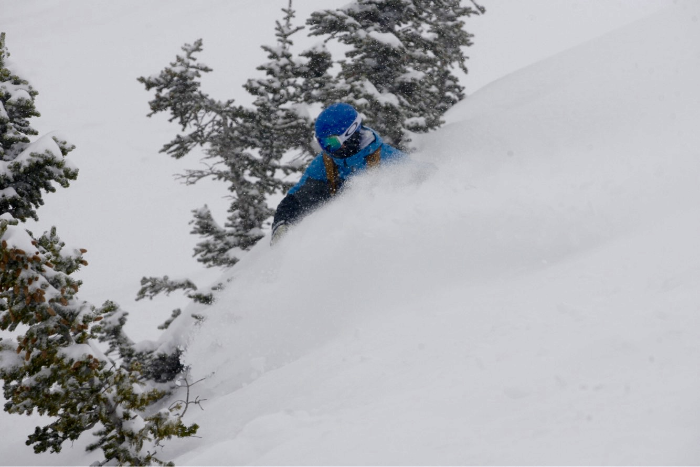

About Me!
I have been skiing/snowboarding for almost 18 years. I began skiing at 3 years old where I learned by my parents and instructors at deer valley in Colorado. With the best ski instructors in the world, my two sisters and I quickly learned to be expert skiers. By the time we were 5 years old we were skiing black diamonds and racing each other to the bottom. Skiing has been a huge part of my life and it has taken me around the world to over 35 different ski resorts in 4 different countries.
When I was 8 years old I decided to learn how to snowboard with my friend. We went to a local ski area on the weekends and after school to take lessons. Eventually I started learning out in Colorado, Utah, and Vancouver where I became confident enough to keep up with the rest of my family who were expert skiers. By the time I was 12 years old I had stopped skiing and focused fully on snowboarding. I was forced to learn on the go since my family never settled on an easy trail that would be geared to my skillset at the time.
Currently I am an expert snowboarder who has been all over the world riding with my family. My favorite places I have been include Lake Lousie Canada, Zermatt Switzerland, Jackson Hole Wyoming, and Breckenridge Colorado. I hope to one day travel to Japan and experience the unique terrain and light snow that makes their mountains some of the best in the world. The rest of this website will take you on a journey with me discussing my favorite ski resorts and equipment I use.

Leave a Comment: